|
赵辉煌 (Hui-Huang Zhao) [English]
副教授，硕士生导师
|
个人介绍
2010年12月，博士毕业于西安电子科技大学，导师为周德俭教授。现任岗位为衡阳师范学院，计算机科学与技术学院 智能计算与图形图像处理研究所所长（硕士生导师）。目前主要研究方向集中在计算机视觉、压缩感知、机器学习等领域，具体包括计算机视觉中的目标识别与分类、分割等、图像风格迁移、计算机图形学中的三维重构、以及机器学习中的深度学习算法研究与应用等。在相关领域学术会议和期刊上共发表论文40余篇（其中EI/SCI论文30多篇），申请发明专利5项，软件索著作权15项，主持国家自然科学基金青年项目1项，省级项目5项，同时参与国家自然科学基金多项。
国内外交流经历
2017年10月至2018年10月，在Cardiff University，School of Computer Science & Informatics，从事博士后工作，合作导师Paul Rosin教授和Yukun Lai博士
2016年7月至2017年7月， 在Cardiff University，School of Computer Science & Informatics，从事访问学者工作，合作导师Paul Rosin教授
2015年7月至2015年9月， 在中国科学院自动化研究所，模式识别国家重点实验室，客座学者，合作导师张晓鹏研究员（三维可视计算团队负责人）
2012年8月至2013年2月， 在University of Texas Rio Grande Valley，College of Engineering & Computer Science，从事访问学者工作，合作导师Bin Fu教授
2011年10月至2015年5月，在湖南大学，电气与信息工程学院，从事博士后研究工作，合作导师王耀南院士。
主要项目经历
| 1.湖南省教育厅科学研究重点项目，18A333，基于深度卷积神经网络的图像多目标风格迁移方法研究，2019.01-2021.12，负责人 |
| 2.国家自然科学基金青年项目，61503128，基于压缩感知的微组装焊点质量三维检测方法研究，2016.01-2018.12，负责人 |
| 3.国家自然科学基金青年项目，61502152，基于多通道深度卷积神经网络的人体行为分析研究，2016.01-2018.12，第二负责人 |
| 4.湖南省教育厅青年项目，14B025，基于异构多核并行的微电子组装焊点的三维重建方法研究，2014.09-2017.09，负责人 |
| 5.模式识别国家重点实验室开放基金，201407330，三维图像压缩感知算法研究，2015.01-2016.12，负责人 |
| 6.湖南省自然科学基金青年项目，12JJ4058，基于双摄像机的微组装电路模块焊点三维重构方法研究，2011.09-2014.09，负责人 |
发表论文(部分)
 |
Audio Style Transfer Using Shallow Convolutional Networks and Random Filters
Jiyou Chen1, Gaobo Yang, Huihuang Zhao*,Manimaran Ramasamy Multimedia Tools and Applications: 2020 (accept). [Code] |
 |
Portrait Style Transfer using Deep Convolutional Neural Networks and Facial Segmentation
Huihuang Zhao*,Jing-hua Zheng, Yao-nan Wang, Xiao-fang Yuan and Bin Fu Computers and Electrical Engineering: 2020 (accept). [Code] |
 |
Image Neural Style Transfer with Global and Local Optimization Fusion
Huihuang Zhao*, Paul Rosin , Yukun Lai ,Mu-Gang Lin , Qin-Yun Liu IEEE Access: 2019, 10.1109/ACCESS.2019.2922554 [Code] |
 |
Automatic Semantic Style Transfer using Deep Convolutional Neural Networks and Soft Masks
Huihuang Zhao*, Paul Rosin , Yukun Lai The Visual Computer: 2019. [Code] |
|
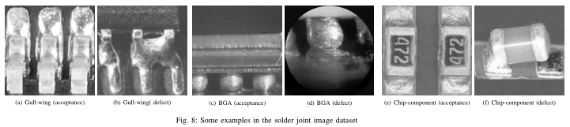 |
Block Compressive Sensing for Solder Joint Images with Wavelet Packet Thresholding
Huihuang Zhao*, Paul Rosin and Yukun Lai Transactions on Components, Packaging and Manufacturing Technology: 2019 [DOI] [Code] [data A] [data B] |
|
|
Multiple Classifiers Fusion and CNN Feature Extraction for Handwritten Digits Recognition |
|
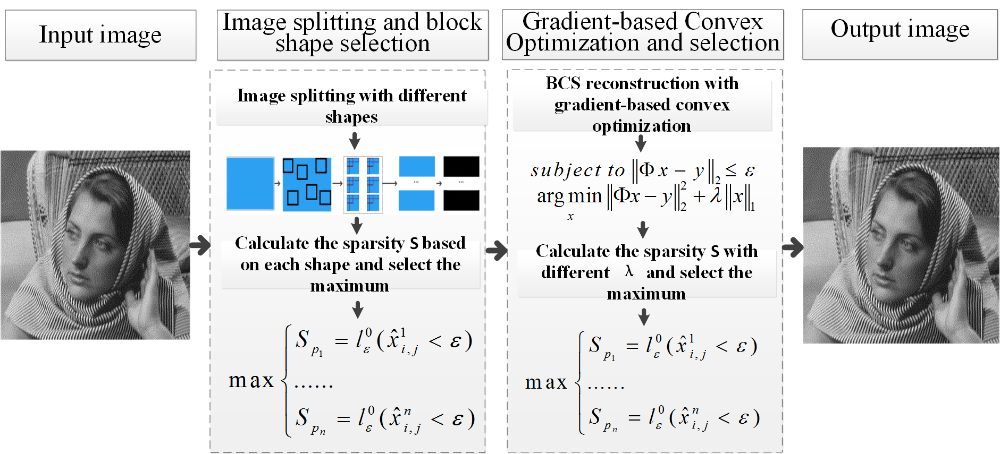 |
Adaptive Gradient-based Block Compressive Sensing with Sparsity for Noisy Images
Huihuang Zhao*, Paul Rosin , Yukun Lai , Jinhua Zheng and Yaonan Wang Multimedia Tools and Applications: 2019. [Code] |
|
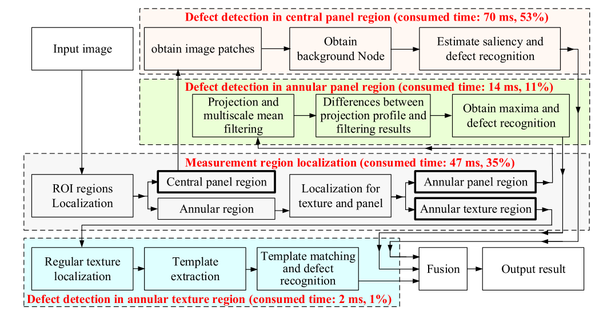 |
Automated visual detection system of glass bottle bottom with improved saliency detection and template matching
Xianen Zhou, Yaonan Wang, Changyan Xiao, Qing Zhu, Lu Xiao, Hui Zhang, Ji Ge and Huihuang Zhao IEEE TRANSACTIONS ON INSTRUMENTATION AND MEASUREMENT (TIM): 2019 |
|
|
Algebraic fusion of multiple classifiers for handwritten Digits recognition
Huihuang Zhao and Han Liu The International Conference on Machine Learning and Cybernetics (ICMLC): 2018.7,China, Chengdu [DOI] [Code] |
|
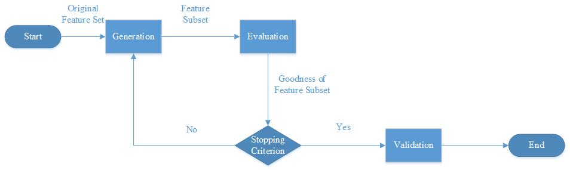 |
Multi-task feature selection for advancing performance of image segmentation
Han Liu and Huihuang Zhao* The International Conference on Machine Learning and Cybernetics (ICMLC): 2018.7,China, Chengdu [DOI] [Code] |
|
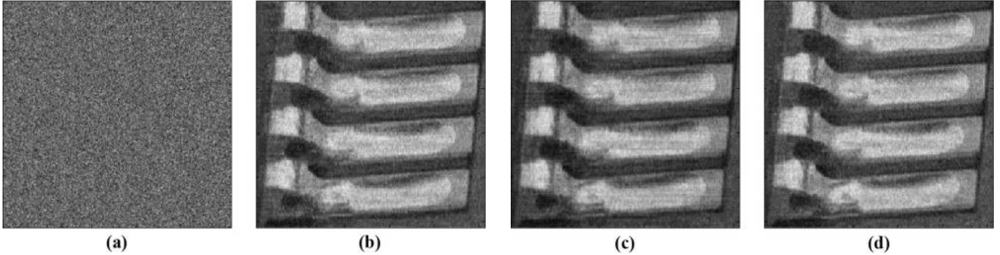 |
Compressive Sensing for Noisy Solder Joint Imagery Based on Convex Optimization
Huihuang Zhao*, Jianzhen Chen, Shibiao Xu , Ying Wang, Zhijun Qiao Soldering & Surface Mount Technology: 2016 ,28(2):114-122 [DOI] [Code] |
|
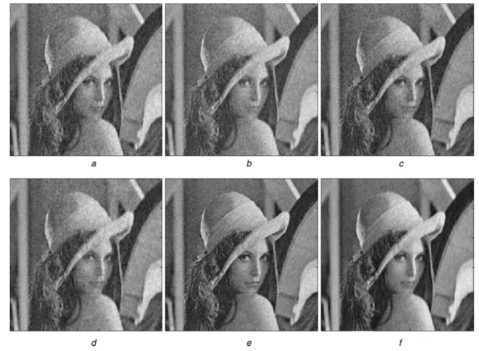 |
Gradient-based compressive sensing for noise image and video reconstruction
|
|
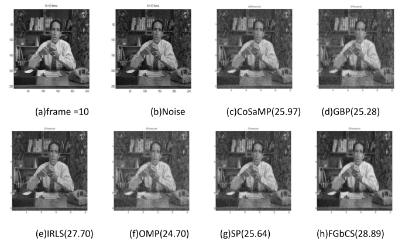 |
Compressive Sensing for Noisy Video Reconstruction
Huihuang Zhao*, John Montalbo, Shuxia Li, Yaqi Sun, and Zhijun Qiao SPIE Defense, Security, and Sensing , Baltimore, Maryland, United States,2015. [DOI] [Code] |
|
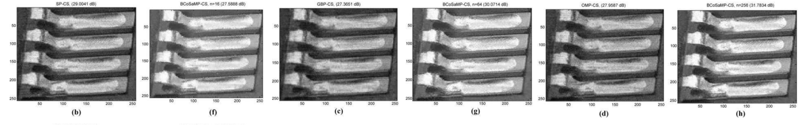 |
Solder joint imagery compressing and recovery based on compressive sensing
Huihuang Zhao*, Yaonan Wang , Zhijun Qiao and Bin Fu Soldering & Surface Mount Technology, 2014, 26(3):129-138 [DOI] [Code] |
 |
一种改进的微电子组装焊点三维重构算法
赵辉煌*,王耀南 , 孙雅琪,魏书堤, 焊接学报, 第35卷,第8期,pp,30-36,2014. |
|
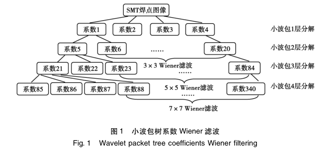 |
基于小波包变换与自适应阈值的SMT焊点图像混合噪声去除
赵辉煌*,周德俭,吴兆华. 焊接学报, 第32卷,第11期,pp,73-76,2011. |
|
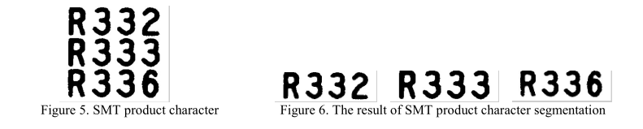 |
Research of the SMT Product Character Segmentation Based on Contour Feature
Huihuang Zhao*, ZHOU Dejian, XU Yuming Journal of Advanced Materials Research, 2011. Vol.201-204:2019-2022 |
|
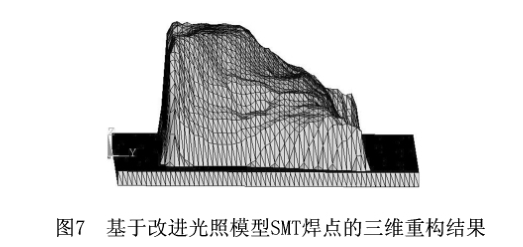 |
SMT片式元件焊点三维质量信息提取技术研究
赵辉煌*,周德俭,黄春跃. 计算机集成制造系统, 第16卷,第8期,pp,1714-1719,2010. |
|
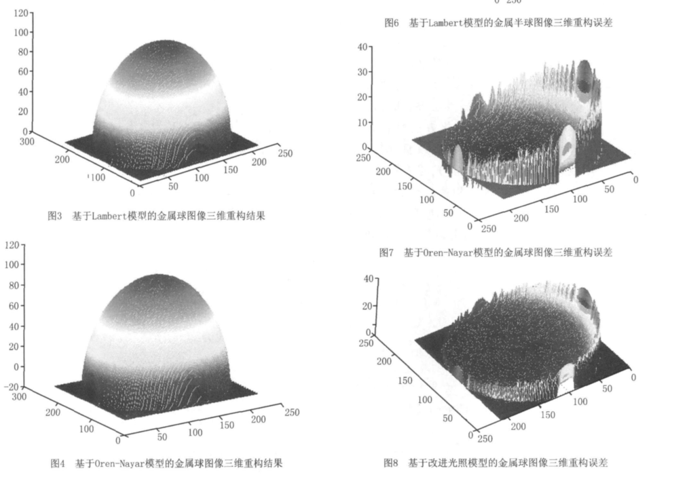 |
一种改进灰度重构形状光照模型及其实现
赵辉煌*,周德俭,黄春跃. 计算机集成制造系统, 第15卷,第10期,pp,1951-1955,2009. |
|
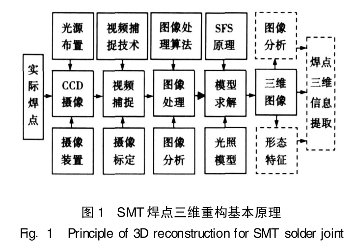 |
基于改进光照模型由SFS方法重构SMT焊点三维形状技术
赵辉煌*,周德俭,黄春跃. 焊接学报 第30卷,第11期,pp,77-81,2009. |
期刊审稿
| IEEE ACCESS ; | Applied Soft Computing; | IEEE Signal Processing Letters ; |
| Computers & Electrical Engineering ; | The Visual Computer ; | Multimedia Tools and Applications |
| Granular Computing ; | ||
学术组织
| 湖南省人工智能学会理事 | IEEE 会员 |
会议组织
| General Co-Chair: CEnet 2019 |